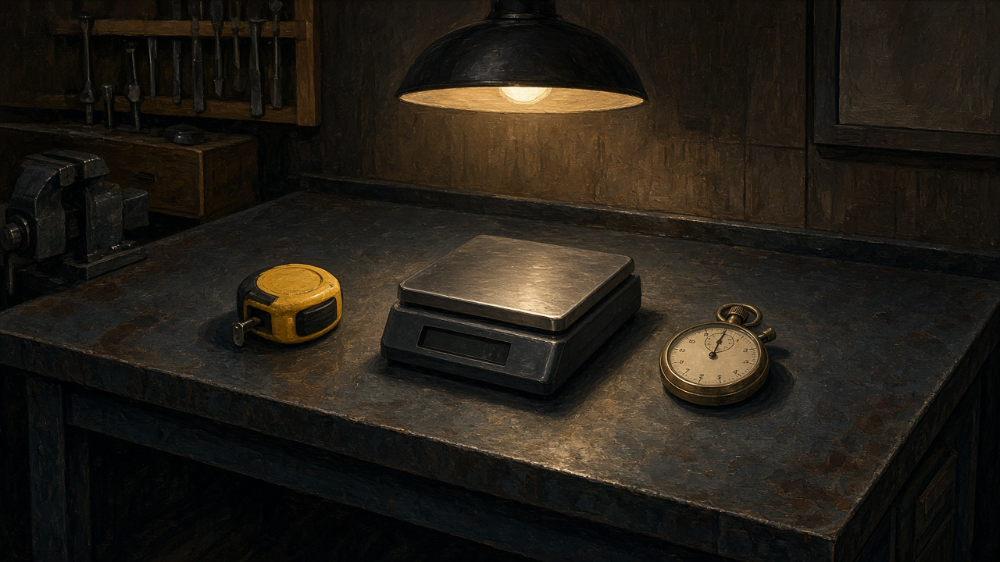

Scienze · Terza professionale

Grandezze e unità
In officina si misura. Non si indovina.
Un numero senza unità non dice niente.
Tocca uno strumento. Ti dice cosa misura.
Scienze · Terza professionale

In officina si misura. Non si indovina.
Un numero senza unità non dice niente.
Tocca uno strumento. Ti dice cosa misura.